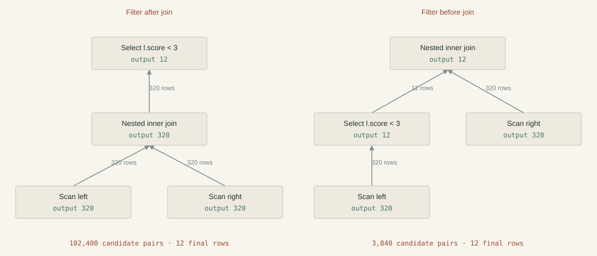
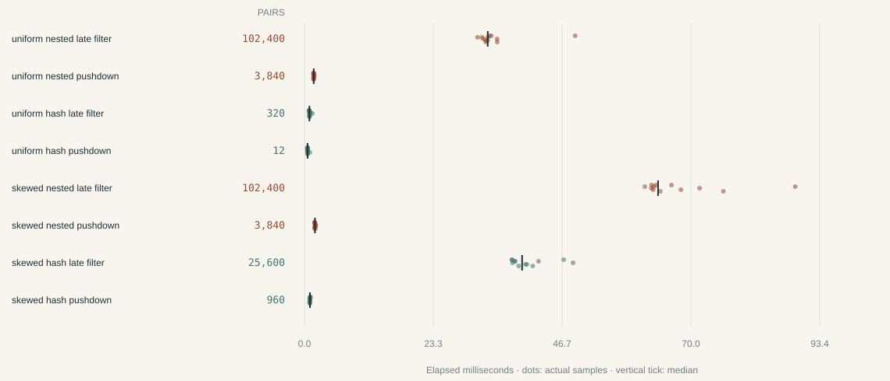

Relational query
plans and row flow
An iterator engine for selections, projections and equijoins, with exact duplicate and NULL semantics checked by local SQLite queries.
SELECT l."l.key", l."l.score",
r."r.key", r."r.score"
FROM "left" AS l
JOIN "right" AS r
ON l."l.key" = r."r.key"
WHERE l."l.score" < 3
Inputs: 320 rows on each side
Result: 12 rows
Scoped optimizer rewrites
Implemented rules
Select(p, Select(q, R)) → Select(q AND p, R) Project(A, Project(B, R)) → Project(A, R), where A ⊆ B Select(left_only, Join(L, R)) → Join(Select(left_only, L), R)
Left-only predicates may pass through inner and left joins. Right-only predicates may pass through inner joins. Columns retain unique names, and every predicate in this restricted language is pure and total.
Explicit limits
The engine does not parse general SQL or claim universal relational rewrites. There is no right-side filter pushdown through a left join, no join reordering, no expression evaluation with side effects, and no DISTINCT operator.
Physical join choice is a separate comparison. Switching nested-loop to hash equijoin preserves the output bag while changing work and memory usage. Output ordering is not part of this model.
Same two 320-row inputs; twelve left rows pass the selective predicate. This count follows directly from 12 × 320 candidate comparisons.
Three-valued logic and bag multiplicity
SQL boolean truth table
| p | q | p AND q | p OR q |
|---|---|---|---|
| TRUE | TRUE | TRUE | TRUE |
| TRUE | FALSE | FALSE | TRUE |
| TRUE | UNKNOWN | UNKNOWN | TRUE |
| FALSE | TRUE | FALSE | TRUE |
| FALSE | FALSE | FALSE | FALSE |
| FALSE | UNKNOWN | FALSE | UNKNOWN |
| UNKNOWN | TRUE | UNKNOWN | TRUE |
| UNKNOWN | FALSE | FALSE | UNKNOWN |
| UNKNOWN | UNKNOWN | UNKNOWN | UNKNOWN |
Selection retains only TRUE. FALSE and UNKNOWN both discard a row. Ordinary equality with NULL is UNKNOWN; two NULL join keys do not match.
Actual inner-join output groups
| l.key | l.value | r.key | r.score | Count |
|---|---|---|---|---|
| 1 | alpha | 1 | 8 | 2 |
| 1 | alpha | 1 | 12 | 2 |
| 2 | beta | 2 | NULL | 1 |
| -1 | minus-one | -1 | 4 | 1 |
| -2 | minus-two | -2 | 5 | 1 |
Two identical left rows each match both key-1 right rows. Projection retains these duplicates. Even an empty column projection emits one empty tuple per input row.
Integer keys −1 and −2 deliberately share a Python hash. Equality still distinguishes them; hash collisions do not create false joins.
Unsafe outer-join pushdown: a counterexample
Moving WHERE r.score > 10 into the right input of a left join introduces new NULL-extended rows. Each version below is independently checked against its corresponding SQLite query. They are intentionally different plans.
Original: filter after left join · 2 rows
WHERE r.score > 10 LEFT JOIN ON l.key = r.key
| l.key | l.value | r.key | r.score |
|---|---|---|---|
| 1 | alpha | 1 | 12 |
| 1 | alpha | 1 | 12 |
NULL-extended rows fail the WHERE predicate because the comparison is UNKNOWN.
Unsafe rewrite: filter right input · 7 rows
LEFT JOIN ON l.key = r.key RIGHT INPUT WHERE r.score > 10
| l.key | l.value | r.key | r.score |
|---|---|---|---|
| 1 | alpha | 1 | 12 |
| 1 | alpha | 1 | 12 |
| 2 | beta | NULL | NULL |
| NULL | unknown | NULL | NULL |
| -1 | minus-one | NULL | NULL |
| -2 | minus-two | NULL | NULL |
| 9 | unmatched | NULL | NULL |
The optimizer refuses this transformation. A different rewrite, such as retaining a suitable post-join filter or changing join type under proven conditions, would require its own rule and proof.
Join algorithms, selectivity and skew
Nested-loop joins examine every candidate pair. Hash joins build keyed groups from the right side and probe only equal non-NULL keys. Both retain duplicate matches and NULL-extend an unmatched left row once.

The uniform hash case examines 320 pairs, or 12 after pushdown. The skewed case has four keys with 80 rows per side per key: 25,600 matches before filtering, or 960 after filtering the left input.
A hash table cannot eliminate required duplicate output. Both algorithms materialize the right input; hash joins additionally store keyed groups. These small local runs are not a comparison against SQLite's performance or a production database benchmark.
Independent semantics checks and reproduction
SQLite 3.50.4 executes local queries with parameterized inserts and predicate literals. Results are compared as multisets, including duplicates and NULLs. No ordering is asserted because no ORDER BY operator is implemented.
Retained evidence
Nine fixed cases, 80 preserved randomized cases, eight benchmark plans, typed inputs, original/optimized plans, full outputs, SQLite SQL/parameters and operator counters are retained.
The unit suite separately checks 360 seeded plans, complete three-valued boolean tables, composite keys, empty schemas, empty inputs, duplicate rows, deliberate hash collisions and execution limits.
python -m unittest discover -s tests -v python -m relab examples/selective_inner.json --optimize --sqlite-check python scripts/verify_results.py python scripts/run_study.py --output-dir build/reproduction
Inputs support signed 64-bit integers, bounded UTF-8 text and NULL. Mixed-type comparisons are rejected. Plans, row counts and candidate comparisons are bounded; exceeding a budget raises an error rather than returning a partial complete result.